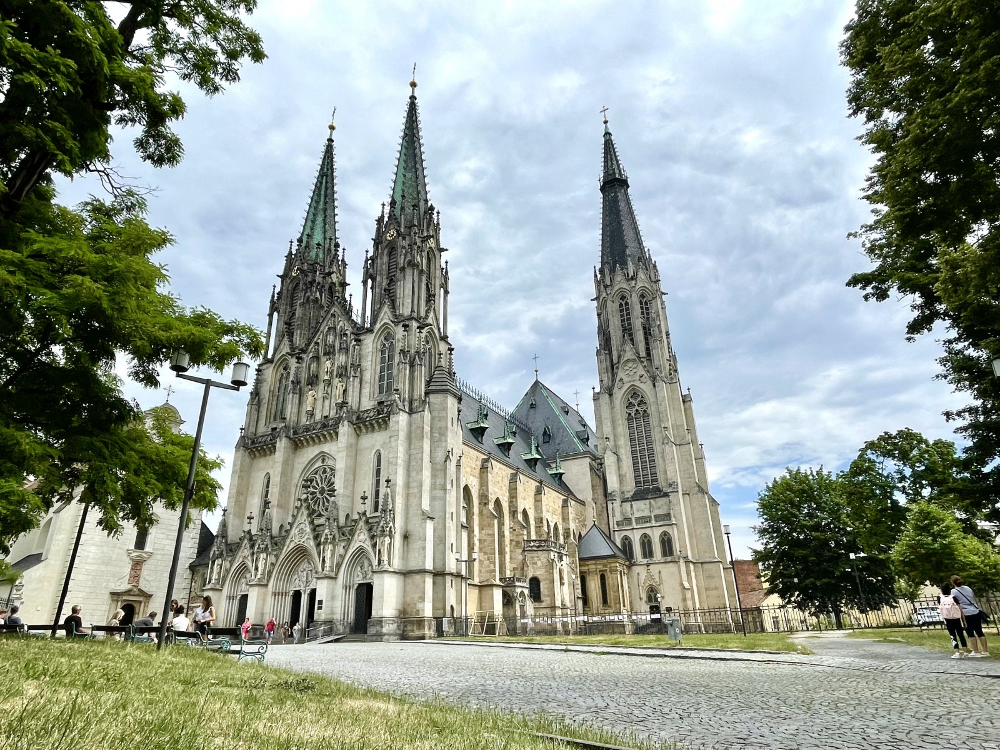

Album Olomouce
Tento monumentální barokní sloup, zapsaný na seznamu UNESCO, symbolizuje vděčnost za překonání morové epidemie. Se svou výškou přes 35 metrů dominuje Hornímu náměstí.
Olomoucký orloj je unikátní historická památka s prvky socialistického realismu. Nachází se na radnici a každodenně přitahuje pozornost svým pohyblivým představením.
Placeholder Katedrála sv. Václava
Gotická katedrála s nejvyšší kostelní věží na Moravě je duchovním centrem Olomouce. Uvnitř ukrývá nádherné vitráže a bohatě zdobený interiér.
Vstupné na Orloj
Zadarmo
0 Kč/osoba
- výstup do 5 metrů
- vstup pouze po schodech
Lepší
100 Kč/osoba
- výstup do 10 metrů
- výjezd výtahem
Nejlepší
150 Kč/osoba
- výstup do 15 metrů
- výjezd výtahem